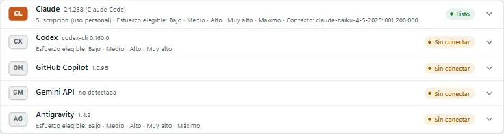
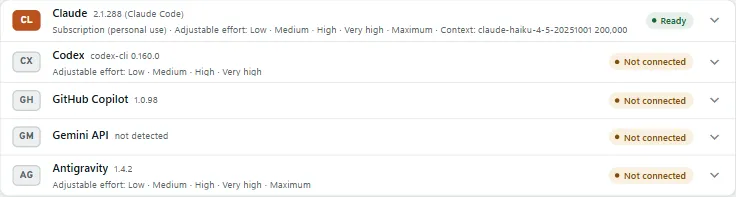
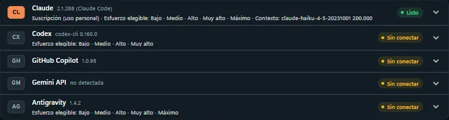
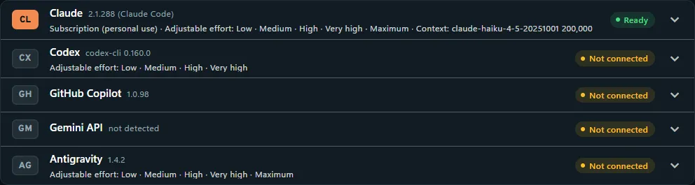

Agentes y modelosAgents and models
Tramtai usa el CLI oficial de cada agente; lo conectas con tu suscripción o con una clave de API.Tramtai uses each agent’s official CLI; you connect it with your subscription or an API key.
Cómo funcionaHow it works
- 1. Suscripción o claveSubscription or keyTu suscripción, para uso personal; una clave de API, para tus apps.Your subscription, for personal use; an API key, for your apps.
- 2. El agenteThe agentClaude Code, Codex, GitHub Copilot, la API de Gemini o Antigravity.Claude Code, Codex, GitHub Copilot, the Gemini API or Antigravity.
- 3. Modelo y esfuerzoModel and effortSe eligen con agente/modelo, por ejemplo claude/sonnet, y cuánto razona.Picked with agent/model, for example claude/sonnet, plus how hard it reasons.
Paso a pasoStep by step
- Abre Agentes: cada uno dice si está listo o qué le falta, y cómo instalarlo si no está.Open Agents: each one says whether it is ready or what it is missing, and how to install it.
- Con tu suscripción: inicia sesión en su CLI (por ejemplo, copilot login) y pulsa «Usar mi suscripción».With your subscription: sign in to its CLI (for example, copilot login) and click "Use my subscription".
- Con una clave: «tramtai claves guardar ANTHROPIC_API_KEY» la guarda cifrada y vale sin reiniciar.With a key: "tramtai claves guardar ANTHROPIC_API_KEY" stores it encrypted and it works without restarting.
- En Ajustes elige el modelo y el esfuerzo que se usan cuando una petición no los dice.In Settings pick the model and effort used when a request does not say.




PreguntasQuestions
¿Qué agentes puedo usar?Which agents can I use?
Claude Code, Codex, GitHub Copilot CLI, la API de Gemini y Antigravity. Los que no están instalados aparecen al final de Agentes, con su enlace.Claude Code, Codex, GitHub Copilot CLI, the Gemini API and Antigravity. The ones not installed appear at the end of Agents, with their link.
¿Suscripción o clave de API?Subscription or API key?
Es solo para uso personal: si la usas para otras apps, el proveedor podría limitar o suspender tu cuenta, y el riesgo es tuyo (Términos de uso). Para tus apps, una clave de API.It is for personal use only: if you use it for other apps, the provider could limit or suspend your account, and the risk is yours (Terms of use). For your apps, an API key.
¿Dónde queda mi clave?Where is my key kept?
Cifrada en el almacén del sistema: Administrador de credenciales, Llavero de macOS o Secret Service de Linux. Nunca en los archivos de Tramtai.Encrypted in the system store: Credential Manager, macOS Keychain or the Linux Secret Service. Never in Tramtai’s files.
¿Tramtai lee las credenciales de los CLI?Does Tramtai read the CLIs’ credentials?
No. Cada CLI usa su propia sesión; Tramtai nunca las lee ni las copia.No. Each CLI uses its own session; Tramtai never reads or copies them.
¿Qué plan de GitHub Copilot necesito?Which GitHub Copilot plan do I need?
Cualquiera con GitHub Copilot CLI, también Free. copilot usa el modelo automático (el único en Free); con otros planes puedes pedir copilot/<modelo>.Any plan with GitHub Copilot CLI, Free included. copilot uses the automatic model (the only one on Free); on other plans you can ask for copilot/<model>.
¿GitHub Copilot gasta mi plan?Does GitHub Copilot use up my plan?
Sí: cada petición gasta créditos de tu plan (premium requests), y Tramtai lo avisa en el registro de la prueba.Yes: every request uses credits from your plan (premium requests), and Tramtai warns about it in the test log.
¿Qué necesitan la API de Gemini y Antigravity?What do the Gemini API and Antigravity need?
Una clave de la Gemini API (GEMINI_API_KEY). No usan suscripción ni hace falta instalar Gemini CLI.A Gemini API key (GEMINI_API_KEY). They use no subscription and you do not need to install Gemini CLI.
¿Dónde guarda las claves en Linux?Where are keys kept on Linux?
En el Secret Service, que necesita secret-tool (paquete libsecret-tools). La página Agentes te dice dónde queda la clave en tu sistema.In the Secret Service, which needs secret-tool (libsecret-tools package). The Agents page tells you where the key lives on your system.
¿Por qué no puedo usar Antigravity en mis APIs?Why can’t I use Antigravity in my APIs?
Va sin herramientas, pero se habilita en APIs cuando pase su prueba con una clave de la Gemini API. Mientras, se usa desde Probar, la terminal y la CLI.It runs without tools, but it is enabled for APIs once it passes its test with a Gemini API key. Until then, use it from Try, the terminal and the CLI.
¿Cómo dejo de usar la suscripción?How do I stop using the subscription?
En Agentes, «Dejar de usar la suscripción» (o «Usar clave de API en su lugar») está en la tarjeta del agente, también si muestra un error.In Agents, “Stop using the subscription” (or “Use an API key instead”) is on the agent’s card, even when it shows an error.
¿Qué pasa si cierro sesión o cambio de cuenta en el CLI?What if I sign out or switch account in the CLI?
Tramtai lo detecta al abrir Agentes y cada 5 minutos: avisa si no hay sesión o si pasó a clave, y muestra la cuenta cuando el CLI la informa.Tramtai notices when you open Agents and every 5 minutes: it warns if there is no session or it switched to a key, and shows the account when the CLI reports it.
¿Para qué sirve desconectar un agente?What is disconnecting an agent for?
Para que Tramtai no lo use, ni como respaldo, sin desinstalar su CLI. Las peticiones que lo pidan reciben agente_desconectado hasta que lo conectes.So Tramtai does not use it, not even as a fallback, without uninstalling its CLI. Requests that ask for it get agente_desconectado until you connect it.